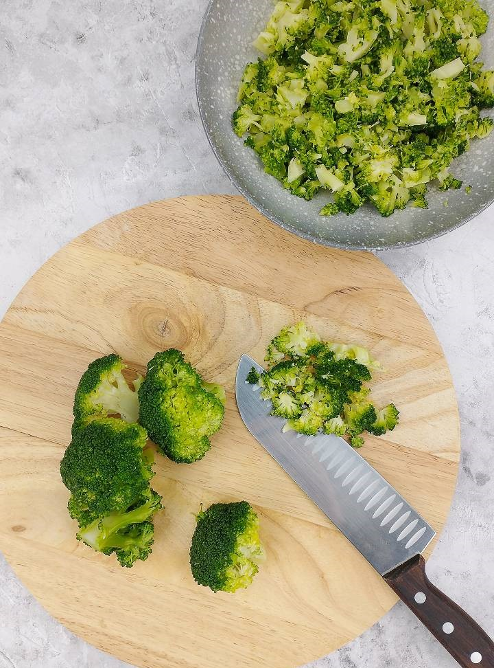
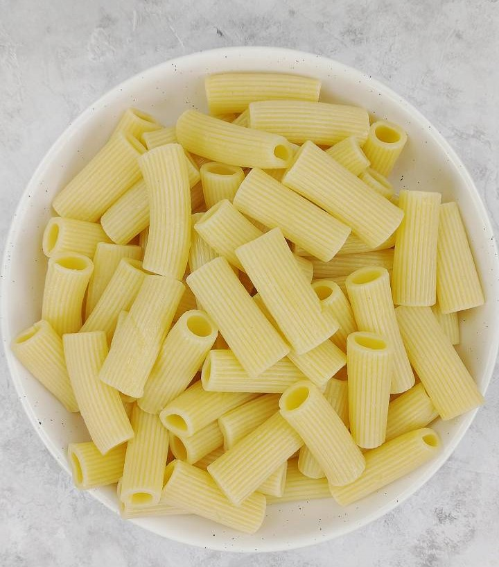
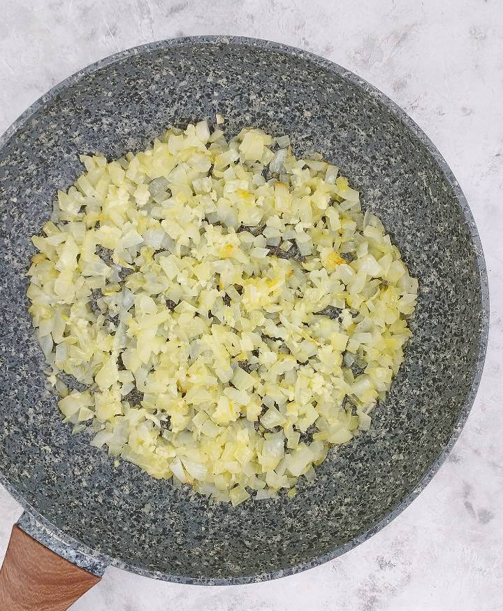
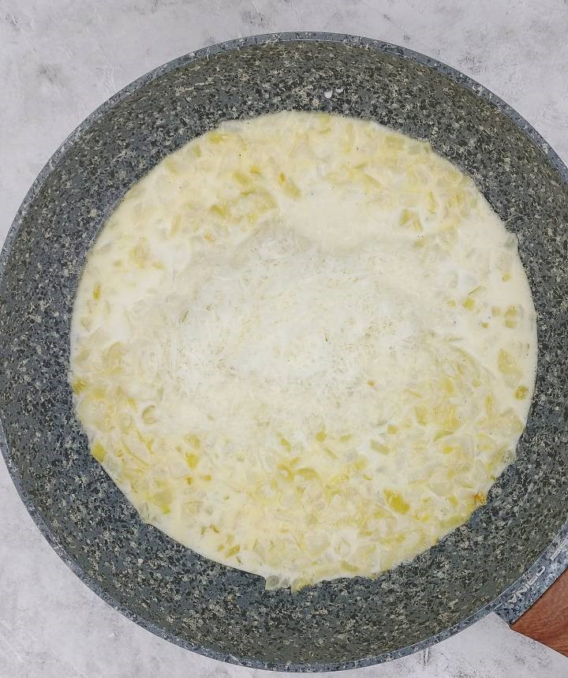
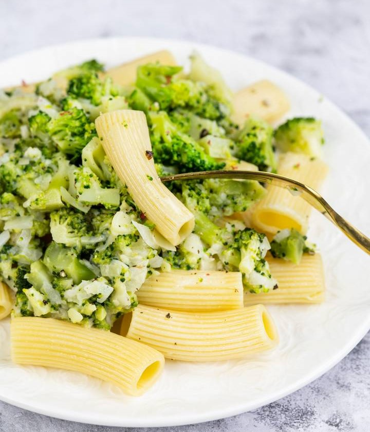

Makaron
Po prostu niebo w gębie
Po prostu niebo w gębie
W pierwszej kolejności polecam ugotować brokuły. Mój brokuł ważył około 580 gramów. Odcinamy same różyczki i wyszło mi 410 gramów różyczek. W garnku zagotuj wodę. Dodaj do niej płaską łyżeczkę soli. Na wrzątek "wrzuć" różyczki brokułu i gotuj je bez przykrycia przez około siedem minut. Brokuły powinny być wystarczająco miękkie, ale jędrne jednocześnie. Po siedmiu minutach gotowania wyłów różyczki brokułu i odcedź je na sitku. Po przestudzeniu można je drobniej pokroić i umieścić w misce.
Do garnka wlej wodę i dorowadź ją do wrzenia. Na ugotowanie 300 gramów makaronu potrzebujesz 10 szklanek wody. Wodę posól dopiero, gdy zacznie się gotować. Do wrzątku wsyp też płaską łyżkę soli. W garnku umieść makaron i gotuj al dente. Makaron gotuję zazwyczaj o minutę lub dwie dłużej, niż zaleca producent na opakowaniu. Tym razem jednak gotowałam go tak długo, jak wskazywały zalecenia na opakowaniu, czyli 12 minut.
Ugotowany makaron powinien być sprężysty, ale miękki. Uwaga - podczas odlewania wody z makaronu odlej pół szklanki wody, w której gotował się makaron. Użyjesz jej do sosu. Ugotowany makaron przełóż na durszlak i od razu z powrotem do garnka, w którym się gotował lub do miski. Makaron ma być mokry. Po ugotowaniu makaron ważył u mnie około 585 gramów.
Nagrzej średniej wielkości patelnię z grubszym dnem. Na patelni umieść łyżkę masła klarowanego oraz wlej łyżkę oliwy lub oleju do smażenia. Cebulę obierz i posiekaj drobno. Umieść ją na patelni z tłuszczem i podsmażaj na średniej mocy palnika przez około 10 minut. Cebula ma się zeszklić. Może się też lekko zarumienić. Po tym czasie na patelnię dodaj też nieduży ząbek czosnku, który wcześniej obierz i przeciśnij przez praskę. Zmniejsz moc palnika do niskiej i podgrzewaj cebulę z czosnkiem nie dłużej niż pięć minut (uważaj, by czosnek się nie rumienił, ponieważ może się zrobić gorzki).
Na patelnię z podsmażoną cebulą z czosnkiem dodaj przyprawy: 1/3 łyżeczki soli, po 1/4 płaskiej łyżeczki pieprzu, szczypta gałki muszkatołowej. W osobnym naczyniu wymieszaj ze sobą: przestudzone pół szklanki wody po gotowanym makaronie, sześć łyżek śmietanki kremówki 30 % oraz jedną łyżeczkę skrobi ziemniaczanej lub mąki pszennej. Dokładnie rozetrzyj mąkę w płynie, by całość miała gładką konsystencję. Płyn wlej na patelnię. Dodaj również około 40 gramów drobno startego sera typu parmezan lub cheddar.
Mieszaj sos i podgrzewaj go na trochę wyższej niż średnia moc palnika, aż sos zgęstnieje i zacznie się delikatnie gotować. Jeśli sos jest za gęsty, to dodaj trochę zwykłego mleka, bulionu (warzywny lub drobiowy jeśli jadasz mięso) lub wody. Sprawdź też smak sosu i w razie potrzeby dodaj więcej soli lub pieprzu.

Makaron z brokułami możesz podać na dwa sposoby. Możesz cały sos z
patelni wylać do miski z ugotowanym makaronem. Następnie dołożyć
jeszcze pokrojone drobniej kawałki brokułu. Całość wymieszać i
podawać lub umieścić w naczyniu do zapiekania. Od góry posypać
makaron z brokułami tartym serem i zapiec w piekarniku z grzałką od
góry - wystarczy 10 minut w temperaturze 180 stopni.
Drugim sposobem do prawie gotowego sosu dodaj część pokrojowych
drobniej różyczek brokułu. Całość zamieszaj, zagotuj i wyłącz.
Makaron rozłóż na talarze. Na makaron wyłóż po porcji sosu, a na samą górę resztę posiekanych brokułów. Całość oprósz świeżo mielonym pieprzem lub posyp dodatkową porcją tartego sera. Podawaj jeszcze gorące.
